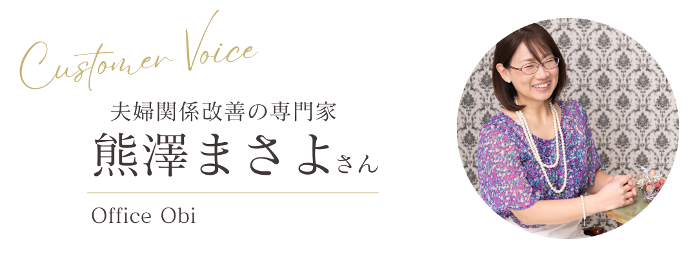
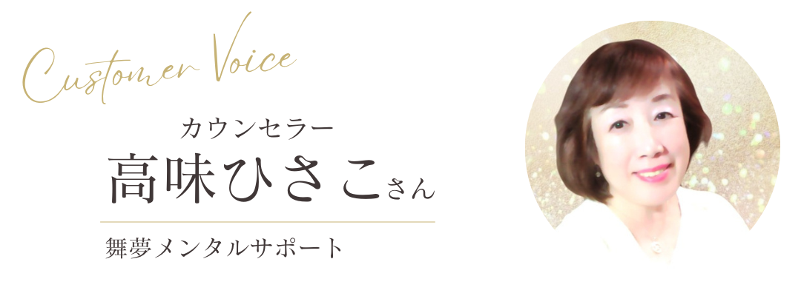

Voices
受講された方の声

野村俊雄さん
無料セッションからリピートとか継続というところがなかなか繋がらないなというところを悩んでいましたが。4回、5回、6回と有料セッションが継続してくれるようになりましたね。継続して受けてくださってる方はもう20回以上受けてくださってる方もいますので、受けてくださるクライアントさんの満足度が高まっていると思っています。
*個人の感想であり効果を保証するものではありません

稲岡じゅんこさん
共感力が課題なんですけれどもクライアントさんから良い評価をいただけるようになって、「自分の話を聞いてくれた」とか「とても向き合ってくれた」っていうようなことをお話してくださるようになりました！
*個人の感想であり効果を保証するものではありません

熊澤まさよさん
私はお試しセッションをさせていただいてからバックエンドの提案をするっていう形でやっているんですけど、体験会の前からもう体験セッションが始まってるという意識に変わり、成約率の推移を実感し、提案の打率が目に見えて変わったという声をいただいています。
*個人の感想であり効果を保証するものではありません

山本和輝さん
企業の中で講師などもやってるんですけども私が開く講座に驚くほど人が集まるようになって、受講者が一気に増えました。直接のトレーニングをやると継続の講座を今開催してるんですけども多くの方がずっと継続して受け続けていただいてます！
*個人の感想であり効果を保証するものではありません

高味ひさこさん
カウンセリングの場に限らず いろんな方とお話をするときにも言語学のスキルを使ってみると、ものすごく相手の方が抵抗感を持たずにすっと聞いてくださる。聞く耳を持ってくださる♪日常の会話の中でものすごく役に立ったというのが本音の感想です。
*個人の感想であり効果を保証するものではありません

下川和枝さん
相談内容が深くなったり、家族に紹介が広がったり、思いがけず遠くから相談に来られたりっていう信用度が全然違ってきたなってすごく感じました。仕事に関しては集客の悩みから解放され、本来の支援活動に集中できる安心感が手に入りましたし、繋がりができてきたのですごく気持ちが楽で、すごいオープンになった感じです♪
*個人の感想であり効果を保証するものではありません